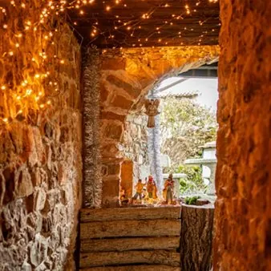

da sab 5 dic a dom 10 gen
La magia del Natale: Poffabro, presepe fra i presepi 2026
Nella suggestiva scenografia del borgo si riscopre la Natività, grazie ai numerosissimi presepi artigianali che adornano ballatoi, cortili e finestre di tutto il borgo. Da non perdere una visita notturna a queste piccole opere d'arte, illuminate per ricevere un'incantevole…
 Indicazioni
Indicazioni
- Costi e prenotazioni
- Costo non indicato · Prenotazione non indicata
- Programma
- Programma da verificare. Apri la fonte ufficiale per orari e possibili aggiornamenti.
- In caso di maltempo
- Nessuna indicazione specifica pubblicata.
- Note
- Acquisito automaticamente dalla fonte.
L’EVENTO
Descrizione completa
Nella suggestiva scenografia del borgo si riscopre la Natività, grazie ai numerosissimi presepi artigianali che adornano ballatoi, cortili e finestre di tutto il borgo. Da non perdere una visita notturna a queste piccole opere d'arte, illuminate per ricevere un'incantevole atmosfera natalizia. L'iniziativa rappresenta un appuntamento tradizionale delle festività, si caratterizza per l'incredibile produzione di presepi che gli abitanti del borgo allestiscono nelle vie, nelle finestre e in ogni dove. La suggestione dell'evento viene enfatizzata dalla naturale cornice fornita dalla bellezza e dall'architettura caratteristica di Poffabro, che d'inverno si arricchisce di una naturale scenografia innevata.
DOVE
Lungo le vie e nei cortili del borgo storico di Poffabro
QUANDO
Dal 5 dicembre 2026 al 10 gennaio 2027 Presepi esterni sempre visitabili
Presepi nella chiesa secondo gli orari diurni di apertura dell’edificio di culto
Inaugurazione: Sabato 5 dicembre 2026 ore 16.00
VISITE GUIDATE
Si effettuano visite guidate a pagamento (italiano, tedesco, inglese, friulano) per singoli e gruppi, previa prenotazione al numero 0427 764425 (ECOMUSEO LIS AGANIS)
€ 10,00 / persona per singoli e gruppi fino a 39 persone
€ 5,00 / persona per gruppi da 40 persone in su
VIABILITÀ
- Chiusura del centro storico: l'accesso veicolare al cuore del borgo è interamente interdetto al traffico per tutta la durata dell'evento per consentire ai visitatori di passeggiare in sicurezza
- Carico e scarico passeggeri: per i pullman turistici è autorizzata una sosta breve per la salita e la discesa dei passeggeri in prossimità della piazza principale di Poffabro. Questo permette ai gruppi (soprattutto a chi ha difficoltà a camminare in salita) di raggiungere agevolmente l'inizio del percorso espositivo 12
- Parcheggio per pullman: una volta completato lo scarico dei passeggeri, i pullman devono obbligatoriamente spostarsi e sostare nel parcheggio dedicato situato a valle del borgo, seguendo le indicazioni fornite dal personale di servizio presente in loco
- Prenotazione e autorizzazione obbligatoria: p er i gruppi che arrivano in pullman, le linee guida ufficiali richiedono di informare anticipatamente l'organizzazione prima dell'arrivo. Questo passaggio è fondamentale per ottenere l'autorizzazione alla salita verso il borgo e coordinare le finestre temporali di scarico e carico, evitando ingorghi lungo la strada della Val Colvera
- Quest’anno, a causa della chiusura della galleria, i mezzi non devono superare la lunghezza di 12 metri
IL PROGRAMMA
Programma e orari
Appuntamenti raccolti dalle fonti elencate. Dove manca un orario, non è ancora disponibile in questa scheda.
Programma pubblicato
- Dal 2026-12-05 al 2027-01-10
INFORMAZIONI UTILI
Prima di partire
- Controllare la fonte prima di partire.
ORGANIZZAZIONE